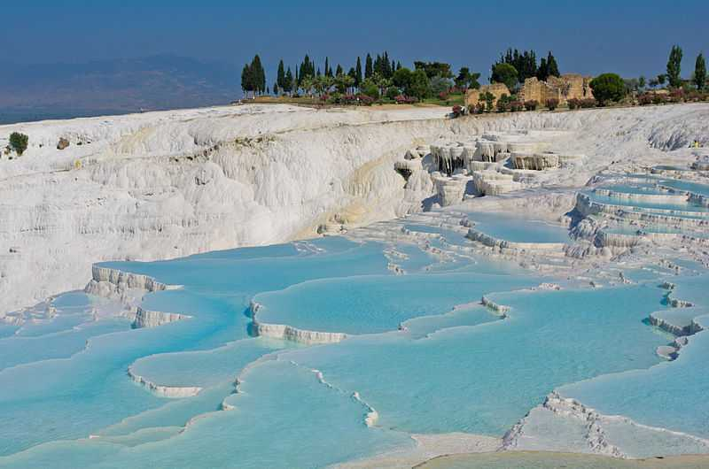

BEST PLACES AND ITS OVERVIEW
Travel gives us our greatest stories, our most cherished memories and countless irreplaceable learnings that we can choose to pay forward to others. It teaches us about ourselves and each other, it broadens our horizons and, just like a reset button, it forces us to refocus on what really matters.
We all need to fall off the radar and escape reality every once in a while. Travel allows us to enjoy complete anonymity in new and unexplored territories. It gives us absolute freedom to live in the moment and it allows us to be anyone, to go anywhere and to do anything. The best part of my six-month trip around the world, way back when, was the freedom of being able to just wake up and pick a spot anywhere on the map and find a way to get there. Travel enables us to be spontaneous and seek new experiences.
Not all classrooms have four walls and travel is the best way to immerse yourself in geography, history, culture, gastronomy, languages, biology … you name it. Travel enriches the mind and educates us far beyond any textbook or travel guide. Not only do curious travellers learn about different landscapes, languages and lifestyles; glean fascinating facts while observing wild animals in their natural habitat; delve into a region’s history and taste the local flavours; but they also learn about themselves (and each other) along the way.
THE CITY OF LIGHTS

Bonjour Mon Ami! Paris needs no formal introduction - synonymous with culture, architecture, food and fashion. That je ne sais quoi of the French capital makes it the dream destination for many. So would you want to leave Paris 'Before Sunset' or would you take our word and spend a 'Midnight in Paris'?! The mesmerizing wrought-iron spire of the Eiffel Tower piercing the skyline, the Arc de Triomphe guarding the most glamorous avenue, the Champs Elysees, the regal Notre Dame cathedral, lamp lit bridges spanning the Seine and art nouveau cafes spilling onto wicker-chair-lined terraces.
ICELAND-FOR THE OFFBEAT TRAVELLER

Amongst the most coveted travel destinations, Iceland is one of the most surreal and magnificent countries in the world. Located close to the Arctic Circle, it offers amazingly dramatic and breath-taking landscapes and exotic natural phenomena. Summer is the best time to visit, owing to the mild temperatures and a plethora of available activities from hiking fjords to playing golf at midnight. However, no time is a bad time to visit this spectacular snow-covered country.
MALDIVES-A TROPICAL HAVEN

Known for: Diving in Maldives, Snorkelling, Vaadhoo Island
The Maldives, a tropical haven of immaculate beaches, are an archipelago of 1,192 coral islands grouped into natural atolls, out of which only a few are inhabited. Time stands still in the Maldives as you lie on the white sand beaches, hearing the crystal clear waves crash against the seashore, swim with the manta rays and reef sharks and feast on a wide array of fishes with the locals. Be it adventure or leisure, Maldives is your answer. With its sun-kissed beaches, palm-fringed islands, crystalline lagoons and pristine waters, Maldives enthrals and draws visitors all year round. The resorts here are an entire island itself usually, including stay options like overwater bungalows.
PAMUKALLE, TURKEY-THE CITY OF MINERALS 
Known for: Pamukkale Natural Park, travertines, Hierapolis
Pamukalle is a city located in the western side of Turkey. This city is called the city of minerals as there are a lot of minerals left on the shores of this city by flowing water. Called as the natural spa this place has tourism as one of its major industries. People come to this place all the time and prefer bathing in its fresh as well as natural water. Pamukalle is a Turkish word which means 'a castle of cotton'. This area has been declared as the world heritage sites and you won't be able to find full-fledged hotels in this area. However, this location has a beautiful scenic view and nature lovers must visit this place at least once in their lifetime.